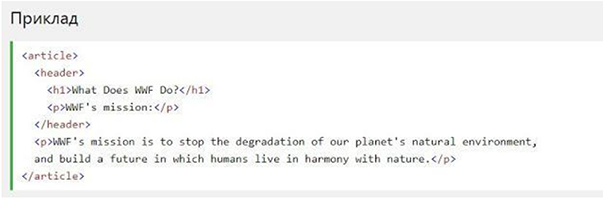

Семантичний елемент чітко описує його значення як для браузера, так і для розробника.
Приклади не семантичних елементів:‹div› і ‹span›- нічого не говорить про його вміст.
Приклади семантичних елементів:‹form›, ‹table›і ‹article›- чітко визначає його зміст.
Семантичні елементи HTML5 підтримуються у всіх сучасних браузерах
Крім того, ви можете "навчити" старих браузерів, як обробляти "невідомі елементи".
Прочитайте про це в підтримці браузера HTML5 .
Елемент ‹section› визначає розділ в документі
Згідно з документацією в3к'с HTML5: "розділ представляє собою тематичну угруповання контенту, зазвичай з заголовком".
Домашня сторінка зазвичай може бути розділена на розділи для ознайомлення, змісту і контактної інформації.
Елемент ‹article› визначає незалежний, автономний вміст.
Стаття повинна мати сенс самостійно, і вона повинна мати можливість читати його незалежно від іншої частини веб-сайту.
Приклади того, де можна використовувати елемент ‹article›:
Елемент ‹header› задає заголовок для документа або розділу.
Елемент ‹header› повинен використовуватися в якості контейнера для вступного змісту.
В одному документі може бути кілька елементів ‹header›.
У наступному прикладі визначається заголовок для статті:
